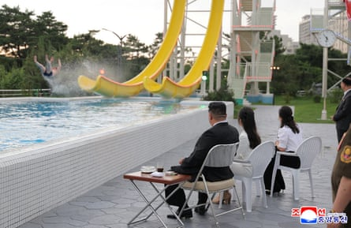

Monday
Peak bear performance was attained today, at Wildwood Devon near Ottery St Mary (also peak British placename performance, but that need not detain us here).
Two five-year-old European brown bears, Mish and Lucy (no relation), escaped from their enclosure at the park and headed straight for its cafe’s food stores, where they happily ploughed their way through a week’s worth of honey before being gently lured back home with a bell and some other snacks, whereupon Mish promptly fell asleep.
It’s perfect. The Teddy Bears’ Picnic (what a big surprise in the woods it must have been, especially to whoever was responsible for keeping the enclosure secure!), Winnie-the-Pooh, a suggestion of Paddington in the eminent reasonableness of it all, plus European brown bears being by far the cutest and most childhood-teddy-like of all. This is the good news story we need. Enjoy it. The year is shaping up … badly.
Tuesday
Mish and Lucy were originally rescued from an Albanian snow drift. I am on my way to Devon to ask them for directions back there. Summer, the vilest of all seasons, is properly here. Once again I appear to have neglected to get my air-conditioned bunker built in time and so I am stuck on this boiling isle, whose architecture, culture, working and retail hours are designed to cope only with temperatures of “brisk” and below.
I was born in a cardigan. That is how I need to live. Not least because when I am forced to expose skin to sun it not only burns but makes me an instant smorgasbord of haemo-delights for any and every passing bug. I say passing – I’m pretty sure some of them fly in specially, a date on their little bug calendars saying: “Mangan meat feast begins”. Bastards. Venomous little bastards.
From now until the end of August, I am an ambulant mass of swellings, slippery with hydrocortisone cream and stuporous with anti-histamine meds. “Does not cause drowsiness,” they say. They do if you take them by the boxful, fools. This year I plan to pay my child to rub me lightly with sandpaper all evening to relieve the itching, and to invest in a mosquito net while I draw up the bunker blueprints and break ground for 2026.
Digested photo: ‘And the water in the Dissidents’ Slide to Joy, it’s boiling, yes?’ Kim Ju-ae accompanies her father, the North Korean leader, Kim Jong-un, and mother, Ri Sol-ju, at a ceremony to celebrate the completion of the Wonsan Kalma coastal tourist zone.Photograph: KCNA/Reuters
Wednesday
People of Britain. *shakes head sorrowfully*. People of Britain, you are upsetting the brave asset management companies of this country. News breaks that we are saving too much. In cash, of all things! Instead of investing in stocks and shares – thereby helping the economy, and asset management companies – we are insisting on having ready access to a certain and definable store of our money so that we can ride out personal and professional crises as well as the boring, ongoing one apparently without end known as “the cost of living”.
Will no one think of the global funds and their traders (I hope I’m using these words correctly – could a rich person check)? If we all just keep hold of our cash and use it to pay for basic goods and services, where’s the excitement? Where are the ecstatic highs and perilous lows of playing the markets? Is the economy just supposed to manage without our contributions? We’re there to serve it, remember, not the other way round!
I love the world of finance, in which everything is turned upside down and everyone looks at you as if pound coins are sentient and that this is exactly the way things are supposed to be. It enables me to look at the nugatory balance in my determinedly current account paying no interest and feel that at least I am by my simple absence from the FTSE 100 sticking it to The Man.
Thursday
“What do you want for your tea when you come on Friday?” Mum asks me on the WhatsApp family chat, because my sister and I taught her how to use the app after Dad died, heedless of the consequences because we weren’t thinking straight.
“Chicken and mushroom, please.”
“No.”
“But you said you’d made some last week?”
“That was for the freezer.”
Sensing the need for back up approaching, my sister joins.
“Are you saying – that it can’t come out of the freezer? Does it have to stay in the freezer for ever? I remind you that we have power of attorney come the day we have proof your mental faculties have deteriorated to dangerous levels.”
“Not for ever. But it hasn’t been in there long.”
“So – like not being able to sit on the sofa for two hours after you’ve plumped the cushions, we can’t eat food from the freezer until it’s been in there long enough for you to revel in the results of your labour?”
“Also, I’ve only done portions for three. There’ll only be two of us.”
“…” says my sister.
“…” say I.
We’re having a Co-op fish pie.
Friday
Break out the bubbly and throw on your glad rags – the wedding is about to begin! Jeff Bezos and his money have arrived in Venice to join with his fiancee, Lauren Sánchez, in holy matrimony at an estimated cost of between £34m and £41m, or about two hours and 40 minutes of the Amazon founder’s earnings.
It has everything a wedding should have. The Kardashians, a newly-single Orlando Bloom, and widespread protests at the multi-billionaire essentially renting the entire city for the three-day nuptial event.
You have to hope, though, that at its heart it is the same as every other wedding. And I do believe that money cannot buy certain things. It cannot buy, I suspect, guests who truly want to take three days out of their busy lives and in uncomfortable shoes to watch two people say some vows in a church, however garlanded, and then be forced to celebrate their bliss for hours and hours thereafter, no matter how free-flowing or top quality the booze. Money can’t buy an absence of boring relatives or freedom from the fear of being seated beside one. Above all, of course, money can’t buy love. Though I am sure this precious state of grace is absolutely at the core of this extravaganza. The rest is noise. Especially from the Kardashian table, I suspect.